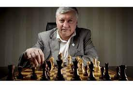
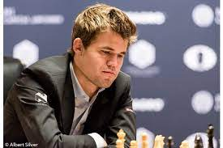
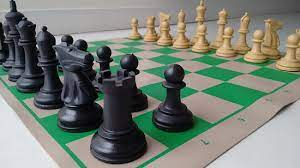
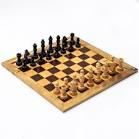
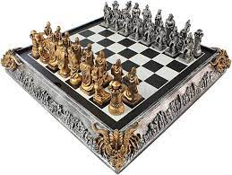

Ésportes incriveis

Menu
Basquete
Peteca
Página Inicial
História do xadrez
O surgimento do xadrez se deu no século VI, na Índia, com o nome de shaturanga,
o qual significa "os quatro elementos de um exército", em sânscrito.
Posteriormente, o jogo foi para a China e para a Pérsia.
Ele surgiu no sudoeste da Europa na segunda metade do século XV, durante o Renascimento Cultural.
Até hoje um dos jogos mais populares do mundo, o xadrez
pode ser levado para a aula de Educação Física de forma simples e divertida.
O xadrez tornou-se conhecido pelos brasileiros em 1808 graças a dom João 6º.
Nessa época, o imperador trouxe para o país o primeiro exemplar impresso de um trabalho sobre o jogo.
O xadrez em muito se assemelha a nossa vida, nos prepara para tomar decisões mais acertadas e
desenvolver habilidades excepcionais, desde as cognitivas como
concentração, foco, memória, velocidade no raciocínio, até valores como
honestidade, perseverança, paciência e disciplina.
Para mais informações...
Saiba Mais
Melhores do mundo


Torneios mais importantes
- Torneio de Candidatos
- Campeonato Mundial
- Campeonato Mundial de Xadrez Juvenil e Cadete.
- Campeonato Mundial de Xadrez por Equipes.
- Campeonato do Mundo de Xadrez Júnior.
Descrição do esporte Xadrez
O xadrez é um jogo de mesa de natureza recreativa e competitiva para dois jogadores.
É praticado sobre um tabuleiro quadrado e dividido em 64 casas, alternadamente brancas e pretas.
De um lado ficam as 16 peças brancas e de outro um mesmo número de peças pretas. Cada jogador tem direito a um lance por vez.
O objetivo de cada jogador é colocar o rei do oponente 'sob ataque' de tal forma que o oponente não tenha lance legal.
O jogador que alcançar esse objetivo diz-se que deu xeque-mate no rei do oponente e venceu a partida.
Preços disponíveis

Tabuleiro Amador Xadrez
R$ 100,00
Descrição: Casas 5,5 x 5,5 cm. Dimensão total 55 x 55 x 1.5 cm , 8x8, 16 peças brancas e pretas

Tabuleiro Intermediário Xadrez
R$ 120,00
Descrição: Casas 5,5 x 5,5 cm. Dimensão total 55 x 55 x 1.5 cm , 8x8, 16 peças brancas e pretas

Tabuleiro Profissional Xadrez
R$ 170,00
Descrição: Casas 5,5 x 5,5 cm. Dimensão total 55 x 55 x 1.5 cm , 8x8, 16 peças brancas e pretas